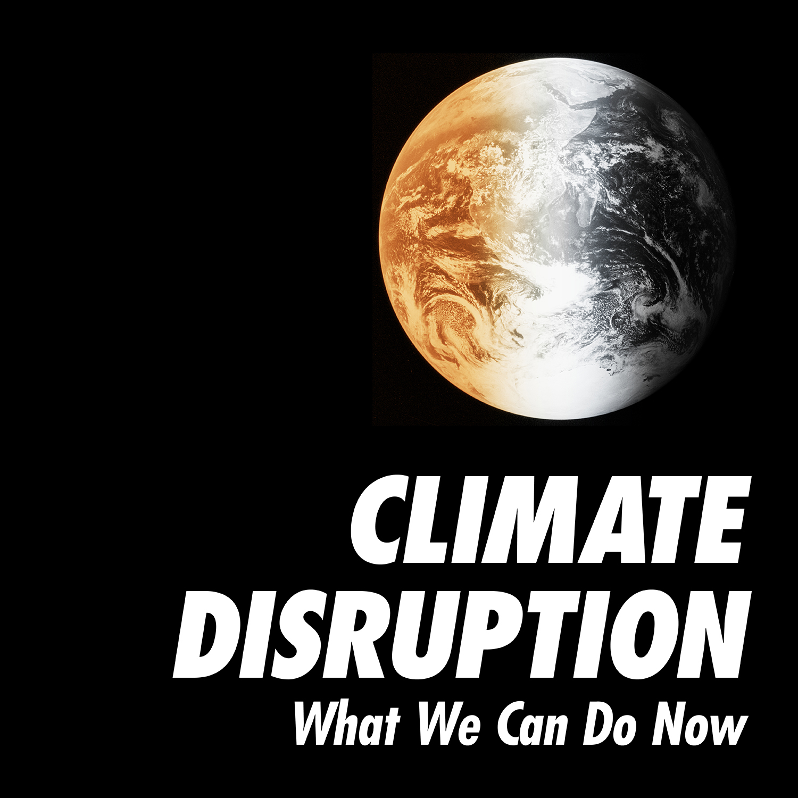

Climate Change!

Climate change refers to any significant change in the measures of climate lasting for an extended period of time. In other words, climate change includes major changes in temperature, precipitation, or wind patterns, among other effects, that occur over several decades or longer
Industry Revolution